Overview
In this project, I explored pre-trained diffusion models using the DeepFloyd IF model from Stability AI. Instead of training a network from scratch, I focused on:
- Implementing the forward noising process and several sampling loops.
- Comparing classical denoising (Gaussian blur) with diffusion-based denoising.
- Building iterative samplers with and without Classifier-Free Guidance (CFG).
- Using diffusion for image-to-image translation, inpainting, and text-guided edits.
- Creating visual anagrams and hybrid images purely via text prompts.
All core code lives in a Jupyter notebook on Google Colab. This page summarizes my results, qualitative observations, and some of my favorite generated images.
Prompt Embeddings on Hugging Face Clusters
Since the prompt encoder is large, I used the course-provided Hugging Face clusters
to generate 4096-dimensional prompt embeddings for my custom prompts.
I generated a dictionary of prompts to embeddings, downloaded the resulting
.pth file once, and loaded it into Colab for all subsequent experiments.
I chose a mixture of realistic, interesting, and illusion-friendly prompts such as 'a high quality photo of Yosemite valley at sunrise', 'an oil painting of an arctic wolf in a snowy forest', and 'a serene misty mountain landscape'.
Seed & Inference Settings
I fixed a global random seed for all experiments in this project to ensure reproducibility across parts:
random_seed = 100 # Used consistently for Parts 0–1.9
For the initial prompt-exploration runs, I varied
num_inference_steps ∈ {5, 40}. With fewer steps, images
were more abstract and noisy; at 40 steps, the outputs were much sharper but
took longer to generate.
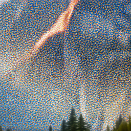
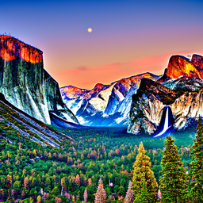
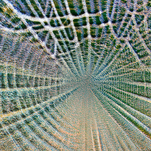
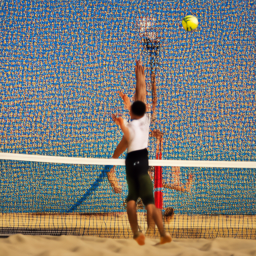
Part 1.1 — Implementing the Forward Process
The forward diffusion process takes a clean image x₀ and produces a noisy image
xₜ at timestep t using:
x_t = sqrt(ᾱ_t) * x_0 + sqrt(1 - ᾱ_t) * ε, ε ~ N(0, 1)
Using the provided Campanile image resized to 64×64, I visualized the
progression of noise at timesteps t ∈ {250, 500, 750}.


Part 1.2 — Classical Denoising via Gaussian Blur
Before leveraging the diffusion UNet, I tried to denoise the noisy Campanile images using
only Gaussian blur (from torchvision.transforms.functional.gaussian_blur).


As expected, Gaussian blur reduces high-frequency noise but cannot recover lost structure. At high noise levels, everything becomes smooth but the content of the image is practically erased.
Part 1.3 — One-Step Diffusion Denoising
Next, I used the pre-trained stage_1.unet to estimate the noise
in a single step and reconstruct x₀ from xₜ.
The UNet predicts a 6-channel output; I use the first 3 channels as the noise estimate.
With the prompt embedding for “a high quality photo”, I:
- Re-noised the clean Campanile using my
forwardfunction. - Estimated noise via the UNet.
- Computed an estimate of the original image by removing this noise.
Part 1.4 — Iterative Denoising with Strided Timesteps
To better exploit the diffusion process, I implemented an iterative denoising loop with a strided schedule:
strided_timesteps = list(range(990, -1, -30)) # 990, 960, ..., 0
stage_1.scheduler.set_timesteps(timesteps=strided_timesteps)
I implemented iterative_denoise(im_noisy, i_start), which starts from
strided_timesteps[i_start] and walks down to 0 using the provided DDPM
update and add_variance.
Denoising from timestep index i_start = 10
I added noise to the Campanile at strided_timesteps[10], then ran
iterative denoising and visualized every 5th step.
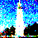
Part 1.5 — Diffusion Model Sampling
With iterative_denoise in place, I used it as a sampler by starting
from pure Gaussian noise and denoising down to t = 0 with
i_start = 0. The prompt embedding was still
“a high quality photo”.
The images are roughly natural but are mostly silhouettes, lacking extensive detail. This is where Classifier-Free Guidance helps a lot.
Part 1.6 — Classifier-Free Guidance
I implemented iterative_denoise_cfg, which runs the UNet twice
(once with conditional prompt embeddings and once with an unconditional “”
prompt), then combines them as:
ε_cfg = ε_uncond + w * (ε_cond - ε_uncond)
I used a CFG scale of w = 7 and sampled again from pure noise for the
prompt “a high quality photo”.
CFG dramatically improves image quality (sharper, more “photo-like”) at the cost of diversity. Many samples resemble generic landscapes or portraits.
Part 1.7 — Image-to-Image Translation (SDEdit)
Using my forward and iterative_denoise_cfg functions, I performed
SDEdit-style image-to-image translation by noising a real image and projecting it
back to the natural image manifold with a mild text condition.
I used the prompt “a high quality photo” and varied the starting index
i_start ∈ {1, 3, 5, 7, 10, 20}, which corresponds to decreasing noise
levels and therefore edits with results gradually closer to the original image.
Campanile Edits (Noise Levels [1, 3, 5, 7, 10, 20])
Two Additional Test Images
I repeated the same procedure on two custom images:
- A photo of Spongebob.
- A photo of Eren (Attack on Titan).
Spongebob (t=30 closest → t=960 furthest)
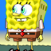
Eren (t=30 closest → t=960 furthest)
Part 1.7.1 — Editing Hand-Drawn & Web Images
I applied the same SDEdit procedure to:
- One downloaded image from the web.
- Two hand-drawn sketches (created using the provided drawing interface).
Each was processed with i_start ∈ {1, 3, 5, 7, 10, 20} under the prompt
“a high quality photo”.
Web Image (Bear)
I started with a drawing of a bear and ran the same SDEdit procedure with
i_start ∈ {1, 3, 5, 7, 10, 20}. Smaller t (e.g., 390) is closer to the original;
larger t (e.g., 960) is more heavily edited.
Hand-Drawn Image 1 (Car)
I drew a simple car and applied the same noising + denoising loop. As the noise increases, the model projects the sketch onto the natural image manifold.
Hand-Drawn Image 2 (Tree)
For a second drawing, I used a simple tree sketch and ran the same set of starting indices.
Part 1.7.2 — Inpainting
I implemented an inpaint function following a RePaint-style idea. At each denoising step, the model proposes an updated image, and I overwrite pixels outside the mask with the appropriately noised original image:
x_t = mask * x_t + (1 - mask) * x_t_original
This keeps the unmasked region fixed while allowing the masked region to be newly synthesized.
Campanile Inpainting
I inpainted the top of the Campanile. Below is the final inpainted result.
Two Additional Images (Mask Alignment Comparison)
I also inpainted two additional images (Eren and Spongebob). For each image, I tried a slightly misaligned mask and then a better aligned mask to compare the effect on realism and edge artifacts.
Eren — Misaligned Mask vs Better Aligned Mask
Spongebob — Misaligned Mask vs Better Aligned Mask
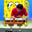
Part 1.7.3 — Text-Conditional Image-to-Image Translation
I extended SDEdit to use custom prompts instead of the generic
“a high quality photo”. This turns projection into text-guided
image-to-image translation. I reused the same noise levels
i_start ∈ {1, 3, 5, 7, 10, 20}.
Campanile → “a watercolor painting of a lighthouse on a cliff”
Eren → “a soft pastel painting of cherry blossom trees”
Spongebob → “a golden hour field of wildflowers in impressionist style”
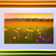
Part 1.8 — Visual Anagrams
Visual anagrams are images that look like one thing upright and another when flipped
upside down. I implemented a visual_anagrams function that averages two
noise estimates: one from the normal image with prompt P_A, and one from
the vertically flipped image with prompt P_B.
Below are two examples. In each, the left is the generated image, and the right is the same image flipped upside down.
Illusion 1: Old Man ↔ Wolf
Illusion 2: Owl ↔ Wizard
Part 1.9 — Hybrid Images (Factorized Diffusion)
In this part, I implemented factorized diffusion to create hybrid images by combining low-frequency structure from one prompt with high-frequency detail from another. Instead of mixing images directly, I mix the predicted noise from two prompts:
ε_low = UNet(x_t, t, prompt=P_low)
ε_high = UNet(x_t, t, prompt=P_high)
ε_hybrid = low_pass(ε_low) + high_pass(ε_high)
I used a Gaussian blur (kernel size 33, σ = 2) to extract low-frequency noise, and subtracted it from the high-frequency noise estimate.
Hybrid 1
Low frequencies: “a serene misty mountain landscape”
High frequencies: “a skull made of intricately carved stone”
Hybrid 2
Low frequencies: “a soft pastel painting of cherry blossom trees”
High frequencies: “a highly detailed ink drawing of a dragon”
Part B — Flow Matching from Scratch (MNIST)
In Part B, I trained my own UNet models on MNIST: first as a one-step denoiser, and then as a time-conditioned (and class-conditioned) flow matching model for iterative sampling. Below are the required visualizations and qualitative results.
Part B 1.2 — Visualizing the Noising Process
I visualized the forward noising process on normalized MNIST digits for increasing noise
levels sigma. As sigma increases, digit structure becomes progressively
harder to recover.
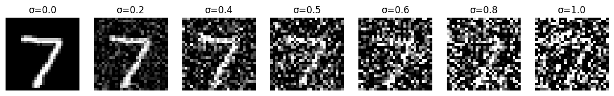
Part B 1.2.1 — Training a One-Step Denoiser
I trained an unconditional UNet denoiser on MNIST with random sigma per batch (generated on-the-fly) using an MSE reconstruction loss.
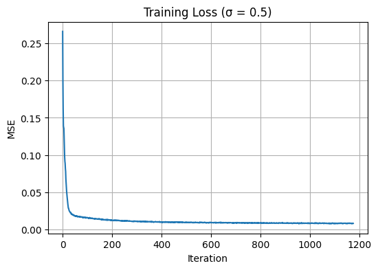
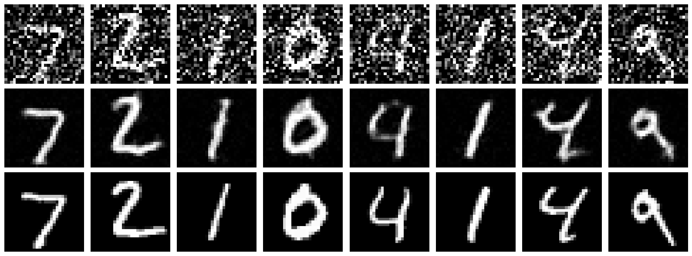
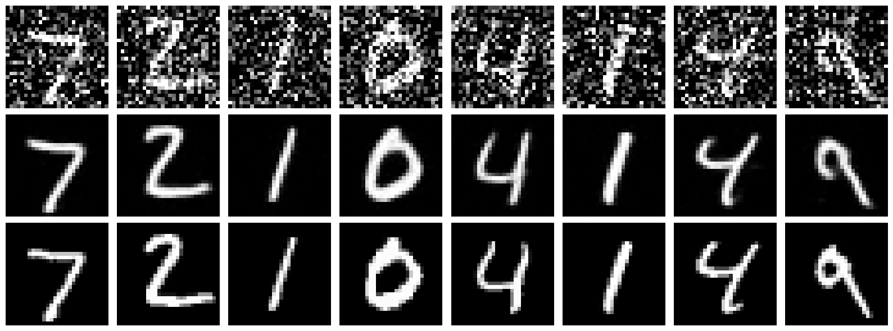
Part B 1.2.2 — Out-of-Distribution Testing
After training on random sigma, I evaluated the denoiser on fixed noise levels (keeping the same underlying digit while varying sigma).
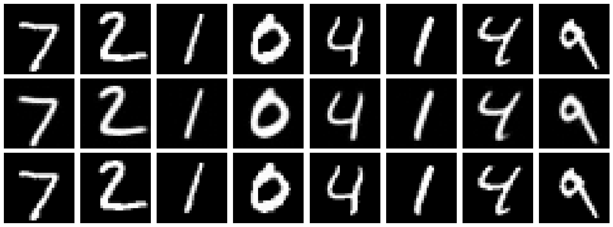
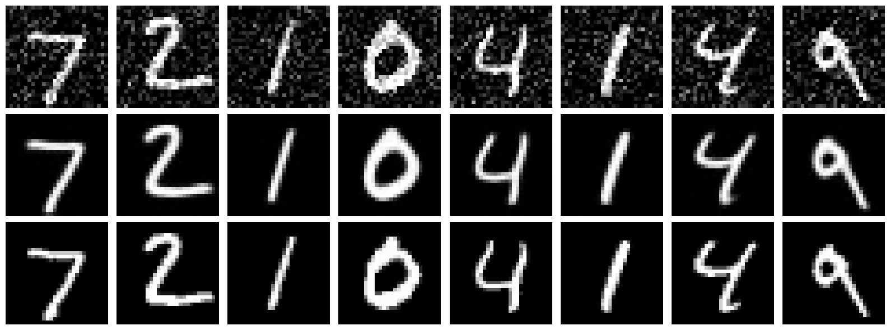
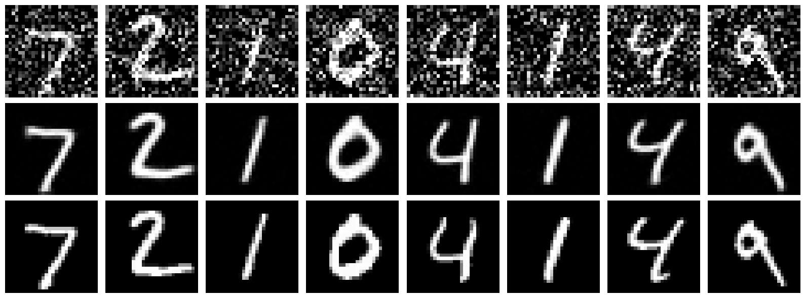
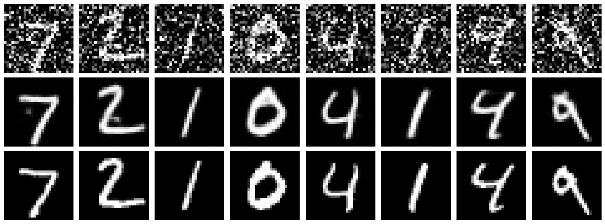
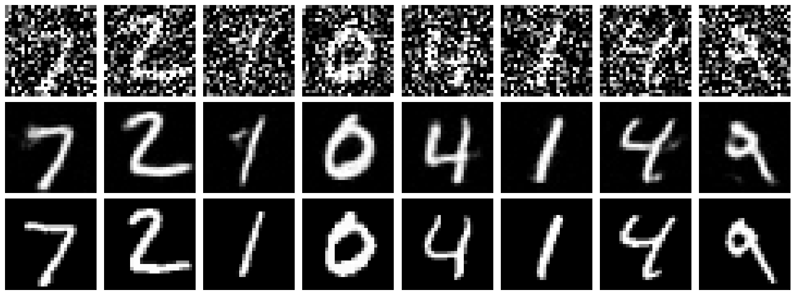
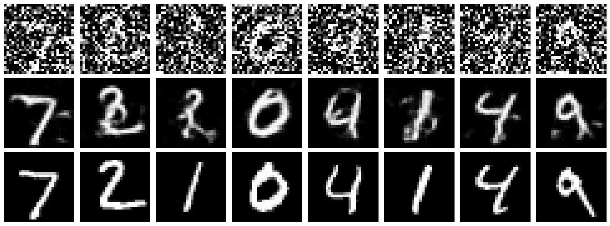
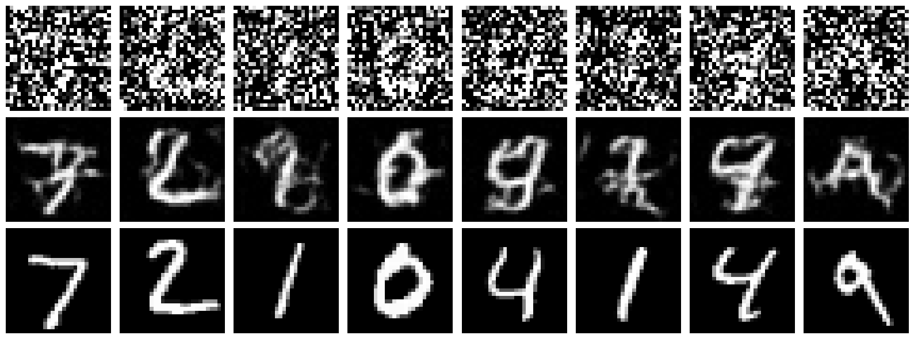
Part B 1.2.3 — Denoising Pure Noise
To turn denoising into a generative task, I trained the same UNet to map pure Gaussian
noise x ~ N(0, 1) directly to a clean digit. Below are the training curve and
sample outputs after epochs 1 and 5.
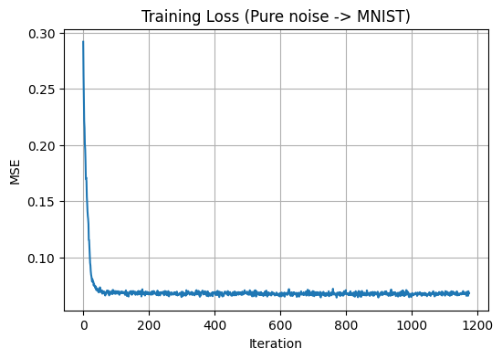
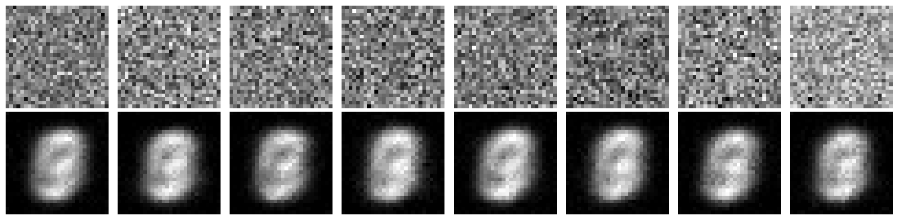
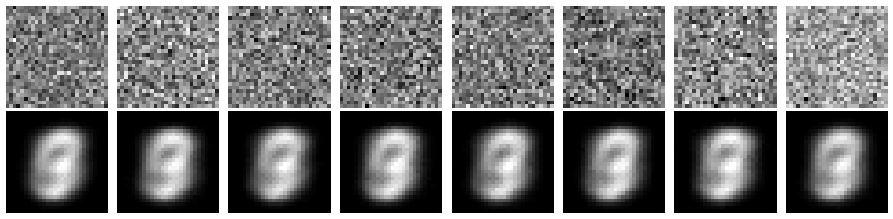
Observed pattern: when trained with an MSE objective on pure noise, outputs tend to collapse toward an “average” digit-like prototype rather than producing diverse samples. This is consistent with MSE pushing the model toward predicting a conditional mean (a centroid in pixel space) over plausible training examples.
Part B 2.2 — Training a Time-Conditioned Flow Matching UNet
I added time conditioning t ∈ [0, 1] using FCBlocks and trained the UNet to predict the
flow field from x_t to x_1 (clean data).
The plot below shows the training loss over time.
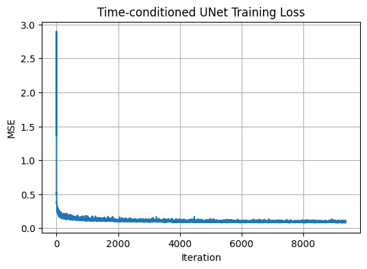
Part B 2.3 — Sampling from the Time-Conditioned UNet
I sampled by iteratively updating x_t using the predicted flow. Below are qualitative
samples after training for 10 epochs.
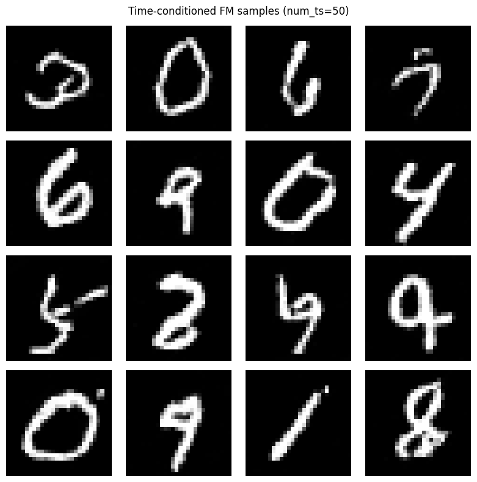
Part B 2.5 — Training a Class-Conditioned UNet
I extended the time-conditioned model by adding class-conditioning (one-hot digit label) with classifier-free dropout during training. The plot below shows the training loss.
Part B 2.6 — Class-Conditioned Sampling with CFG
I sampled from the class-conditioned UNet using classifier-free guidance, generating 4 samples per digit. Class-conditioning allows the model to converge faster, so I only trained for 10 epochs.
I additionally removed the exponential learning rate scheduler and compensated by carefully tuning the base learning rate and training duration, achieving comparable qualitative performance with a simpler optimization setup.
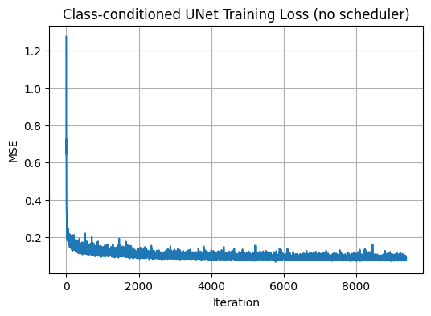
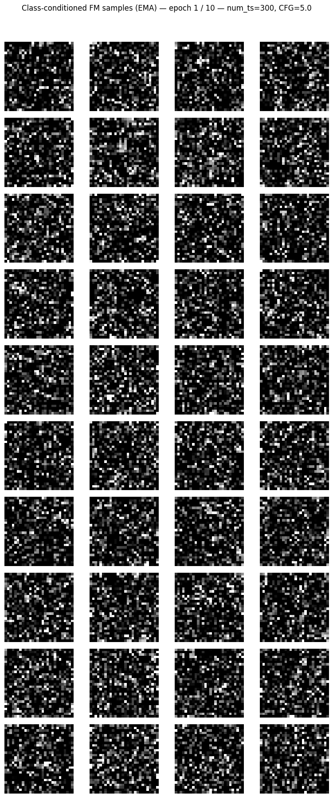
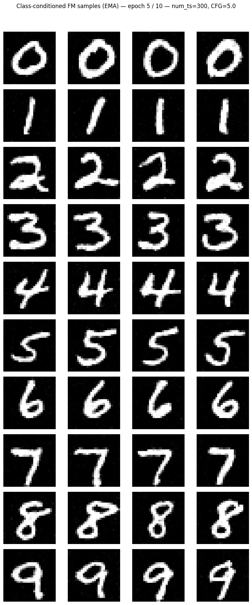
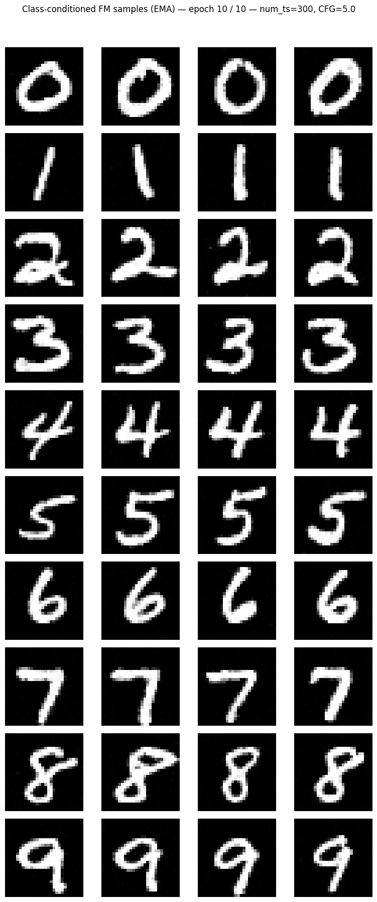
Takeaways — Part B
- One-step denoising works well for moderate corruption, but it struggles as noise grows and does not naturally support high-quality generation from pure noise.
- Flow matching provides a clean way to learn an iterative generative process: the UNet learns a time-dependent vector field that transports noise toward the data distribution.
- Conditioning (time + class) significantly improves sample fidelity and controllability, especially when paired with classifier-free guidance.
Takeaways — Part A
- Implementing the forward process and sampling loops demystified how diffusion models walk from noise to images and back.
- Classical denoising (Gaussian blur) can smooth noise but cannot reconstruct lost structure; diffusion models effectively learn a powerful image prior.
- Iterative denoising and Classifier-Free Guidance are key ingredients for sharp, prompt-aligned samples.
- With the same backbone, we get image-to-image translation, inpainting, and stylization almost “for free” via clever masking and conditioning.
- Visual anagrams and hybrid images show that diffusion models can be used as a creative tool for optical illusions by manipulating their intermediate noise representations.